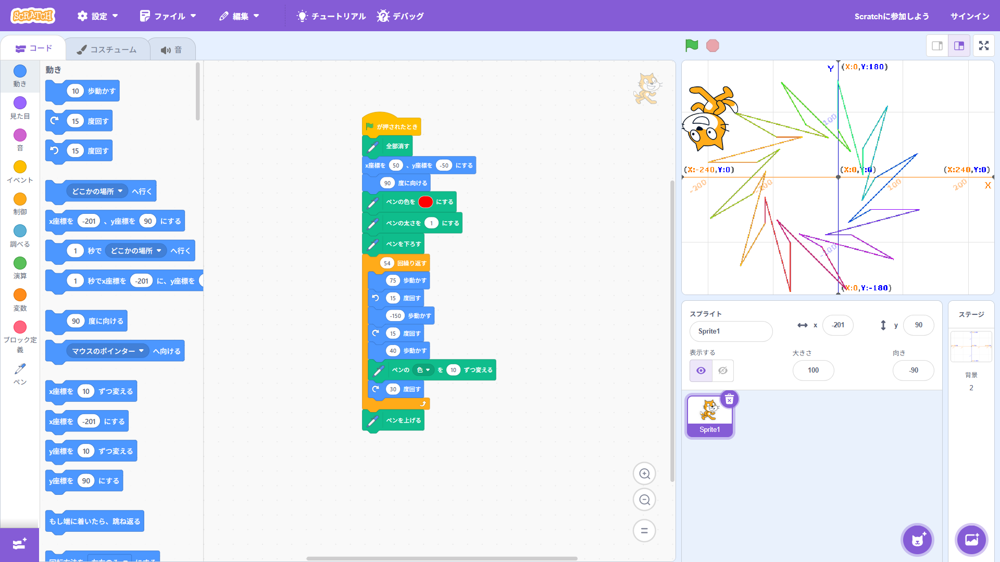
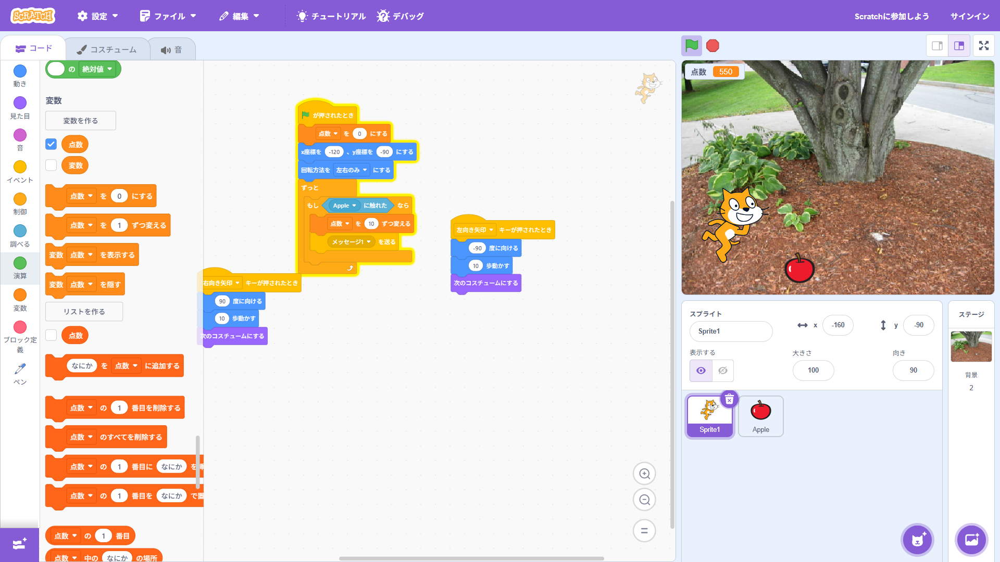

1週目のレポート ： 公大高専１年実習I-1
3a班20番 坂口載政
第1週目
1-1 サイエンスアート

1.内容
scratchでラインアートという拡張機能を用いて図形を作成した。角度やベクトルの値に入れる数値でどのように図形の形が変わるのかを体験した。
2.感想
自分が想像した図形を作成するのは難しいと感じた。そのため数学はプログラミングをする際などにはかなり使用することに気づいた。
scratchは今回までに何度も触ってきたのでプログラムを作るのはスムーズにできた。
1-2 ゲーム

1.内容
上からリンゴを降らせるプログラムとスプライトがリンゴに触れたとき点数を上げて触れてリンゴを表示させないプログラムを作成した。
2.感想
プログラムを作成することに関しては何も問題なくスムーズにできたが、時間があまりなかったためスプライトのデザインを凝ることができなかったのが少し残念に思った。
またこのようにデザインを考えたり作成したりする機会があればいいものを作りたいと考えた。
1-3 ホームページ作成
私のホームページ
1.内容
githubを用いて「私のホームページ」を作成した。すでにgihubで作成されていたプログラムの中にしていされた場所を自分のことについて置き換えることでホームページを作成することができた。
2.感想
最初は文字だけで抵抗感が強かった。githubは簡単にプログラムを作成できるので結果として楽しいと感じた。
画面に映ったものを写すだけ感が強くところどころ理解するのが難しと感じた。
各ページへのリンク
1週目のレポート
2週目のレポート
3週目のレポート
私のホームページ